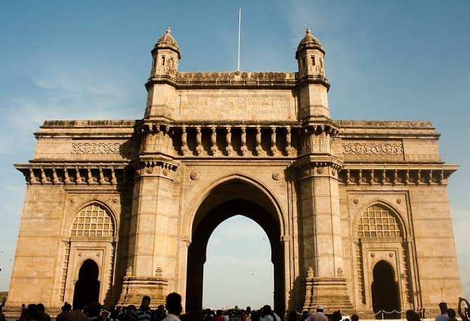
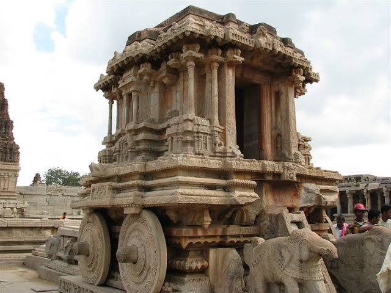

Taj Mahal,Agra
- Location: Agra, Uttar Pradesh, India
- Built: 1631–1653; 373 years ago
- Built for Mumtaz Mahal
Red Fort,Delhi
- Location: New Delhi
- Built: 12 May 1639-6 April 1648, 378 years ago
- Built for Mughal Empire
Gateway,Mumbai
- Location: Mumbai, Maharashtra, India
- Height: 26 m (85 ft)
- Architectural style: Indo-Saracenic



Qutub Minar,Delhi
- Location: Mehrauli, South Delhi, India
- Height: 72.5 metres (238 ft)
- Architectural style: Islamic Architecture
Lotus Temple,Delhi
- Location: Kalkaji, Delhi, India
- Height: 40.8 metres (134 ft)
- Structural system: Cast-in-place reinforced concrete shells, clad in marble
Hampi,Vijaynagara district
- Location: Hampi (Pampa Kshetra)
- State: Karnataka
- Type: Vijayanagara architecture